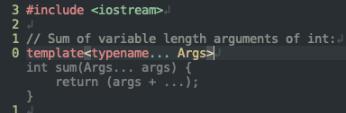

2 minutes
Tabbyによるコーディング支援を試した
これは，名工大 Advent Calendar 2024 - 3日目の記事です．
長らくこのブログに書き込んでいませんでしたね．2024年が終わってしまいそうです．
はじめに
昨今，GitHub Copilot 等の高度なコーディング支援ツールが普及しつつあります． 私もサービス開始当初から使っていますが，非常に賢いコード補完機能として，もはや手放せないほど手に馴染んでいます．
さて，GitHub Copilot は（ほとんどの人にとって）有料ですから，毎月（毎年）一定の金額を支払う必要があります． 加えて，GitHub の判断によって，明日から使えなくなる可能性もあります． 手放せないツールが突然使えなくなっては困りますよね．
世の中には，似たようなサービスを自らセルフホスティングするためのプロジェクトが存在します． 本記事では，その中でも Tabby というプロジェクトを実際に試してみます．
Tabby とは
以下に，リポジトリから引用した説明を載せておきます． 要約すると，お手元の GPU と Tabby さえあれば，GitHub Copilot に代わるコーディング支援環境を構築できるわけです．
Tabby is a self-hosted AI coding assistant, offering an open-source and on-premises alternative to GitHub Copilot. It boasts several key features:
- Self-contained, with no need for a DBMS or cloud service.
- OpenAPI interface, easy to integrate with existing infrastructure (e.g Cloud IDE).
- Supports consumer-grade GPUs.
環境構築
ドキュメントによると，Docker イメージが提供されており，以下のコマンドで Tabby サーバーを起動できるようです． Docker から GPU を使えるよう設定しておく必要があります．
利用できるモデルはこちらにリストされています．
また，リストされていない Qwen2.5-Coder-1.5B 等も，どうやら利用可能のようです（リストが更新されていない？）．
# 初回起動時は巨大なファイル（=LLM）をダウンロードする
docker run -it \
--gpus all -p 8080:8080 -v $HOME/.tabby:/data \
tabbyml/tabby \
serve --model StarCoder-1B --device cuda # --chat-model <いらないかな>
うまく行けば，以下のような出力を得られます． 表示されているURLへアクセスし，初期設定を行ってください（トークンを得られます）．
Writing to new file.
🎯 Downloaded https://huggingface.co/ikw/Qwen2.5-Coder-1.5B-GGUF/resolve/main/qwen2.5-coder-1.5b-q8_0.gguf to /data/models/TabbyML/Qwen2.5-Coder-1.5B/ggml/model-00001-of-00001.gguf.tmp
00:05:00 ▕████████████████████▏ 1.53 GiB/1.53 GiB 5.22 MiB/s ETA 0s. ✅ Checksum OK.
████████╗ █████╗ ██████╗ ██████╗ ██╗ ██╗
╚══██╔══╝██╔══██╗██╔══██╗██╔══██╗╚██╗ ██╔╝
██║ ███████║██████╔╝██████╔╝ ╚████╔╝
██║ ██╔══██║██╔══██╗██╔══██╗ ╚██╔╝
██║ ██║ ██║██████╔╝██████╔╝ ██║
╚═╝ ╚═╝ ╚═╝╚═════╝ ╚═════╝ ╚═╝
📄 Version 0.20.0
🚀 Listening at http://0.0.0.0:8080
（補足）サーバー側の計算機環境
| 対象 | バージョン等 |
|---|---|
| OS | Ubuntu 24.04 LTS |
| CPU | Ryzen Threadripper 2990WX |
| GPU | NVIDIA RTX 2080Ti 11GB |
| RAM | 128GB |
| Docker | 27.2.1 (Server) |
| Tabby | 0.20.0 |
Neovim から使う
インストール
私は Neovim をエディタとして使っているため，ここに従って Tabby のプラグインをインストールしました． VSCode や IntelliJ からも使えるようです．
プラグインがインストールし終わったら，~/.tabby-client/agent/config.toml へサーバーの設定を追加します．
[server]
endpoint = "http://localhost:8080" # 適切に書き換える
token = "auth_..." # 適切に書き換える
動作
実際にコード補完している様子はこんな感じです（カーソルから下の部分）↓
モデルには Qwen2.5-Coder-1.5B を使いましたが，
さすがに GitHub Copilot よりは性能が悪いなぁと感じました．
意図しない補完を提案する頻度が高いように思います．
とはいえ，小型のモデルらしく Copilot よりも高速に補完してくれます．
GPU に余裕がある場合は，もっと巨大なモデルを試しても良いでしょう．

追記：Tabby を有効にしながらこの記事を書いてみましたが， 小さなモデルであっても Markdown をいい感じに補完してくれるので便利でした．
まとめ
GitHub Copilot に代わるコーディング支援ツールとして，Tabby を試してみました．
モデルの性能や所持している GPU の性能によって補完能力がかなり変化するため，GitHub Copilot の代替品として使えるかは人によると思います．
ただし，個人的にはほとんどの場合で GitHub Copilot 並の仕事をしてくれそうだと感じました． おそらく，私はこういったツールを単なる（けっこう賢い）補完機能としてしか使っておらず， コードのロジックや設計は結局自分で考えているからだと思います． 普段 GitHub Copilot 側へそういった部分を委ねている場合は，ローカルで動作する LLM では性能的に物足りないでしょう．